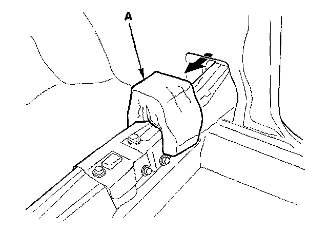
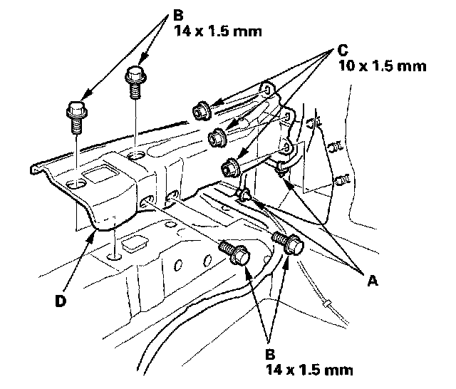
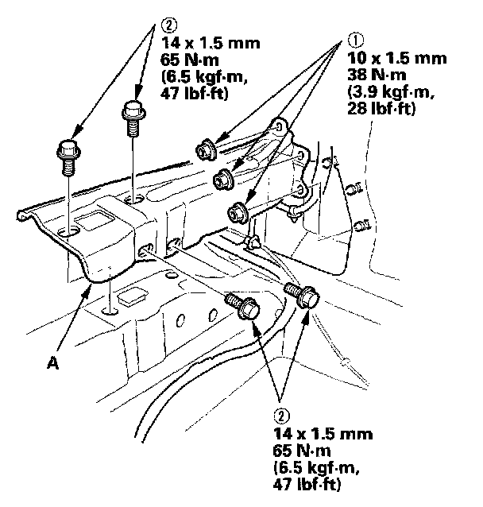

Cross-Member: Service and Repair
Middle Cross-member Gusset Replacement2-door
NOTE: Take care not to scratch the body.
1. Remove the rear side trim panel.
2. Pull back the rear part of the carpet, as needed.

3. Remove the insulator (A).

4. Detach the floor wire harness clips (A).
5. Remove the bolts (B) and nuts (C), then remove the middle cross-member gusset (D).

6. Install the gusset in the reverse order of removal. When installing the mounting bolts for the middle cross-member gusset (A), torque the mounting hardware in the sequence shown. If the mounting bolts are not torqued in this sequence, damage to the quarter panel will occur.